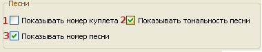

5.3 Настройки для песен

1. Показывать номер куплета: — номер будет показан в левом верхнем углу экрана.
2. Показывать тональность песни: — тональность будет показана в правом верхнем углу экрана.
3. Показывать номер песни: — номер будет показан в крайнем правом углу экрана, за знаком тональности (если она указана).